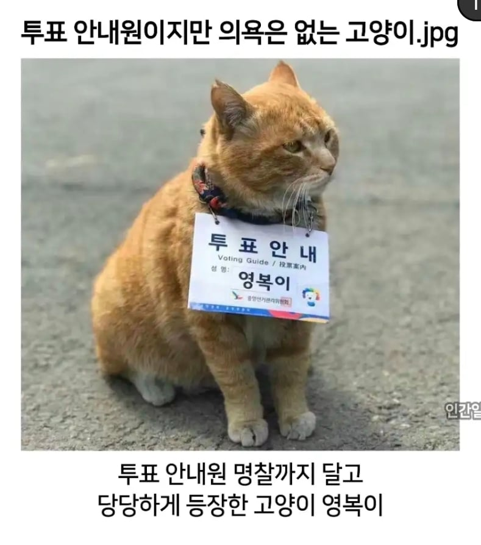
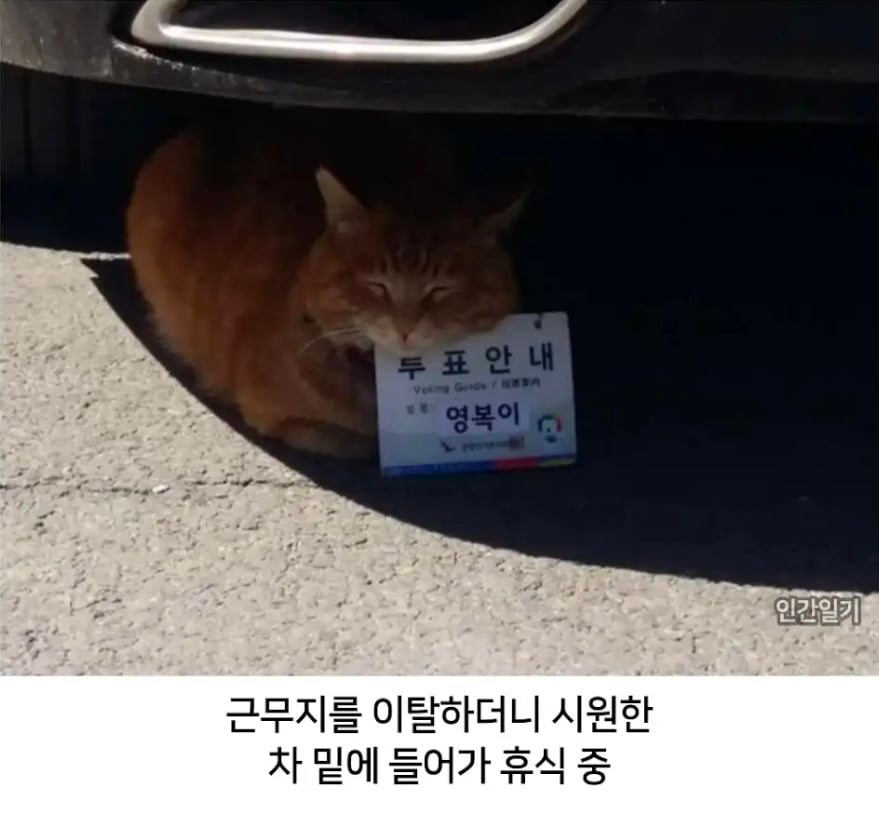

휴가 쓰는 선관위직원 vs 출근까지 한 영복이
영복이 압승 ㅋㅋㅋㅋㅋㅋㅋ
대황킹영복 ㅠㅜ
영복이는 커엽잖아 ㅋㅋㅋ
영복이는 선관위와 다르게 그래도 출근해서 일은 하네
열심히 하면서 저런 이벤트를 해야 좋게 봐주는거지
근무태만이네 까져거지고
이쁘면 단가…하 ㅅㅂ

고양이가 목에 저런거 걸고있단게 최선을 다한거 아님?
민주묘총 회원임이 틀림없다
투표안내원 알바 시급 많이 주던데. 지자체마다 좀 다르겠지만 18만원인가 받았음. 심지어 뭐 계좌이체도 아니고 봉투에 현금 지폐랑 동전 담아서 즉시지급 해주더라
`'영복이'는 주중대한민국대사관 선양총영사관의 마스코트인 치즈태비 고양이입니다`
중화인민공화국의 스파이.... 영복....
고양이보다 못한새끼들
그러고보니 선관위 그때 뒤로 뭔가 있었나. 어영부영 잊힌 느낌이
감히 선관위를 의심해? 너 극우지!
포즈만 봐도 짬이 높네
저 고양이가 선거날 휴가쓰는 선관위 직원보다 낫네
일을 저렇게 대충하면
츄르 뺏어야 되는거 아니냐
한국 선관위 현실임?